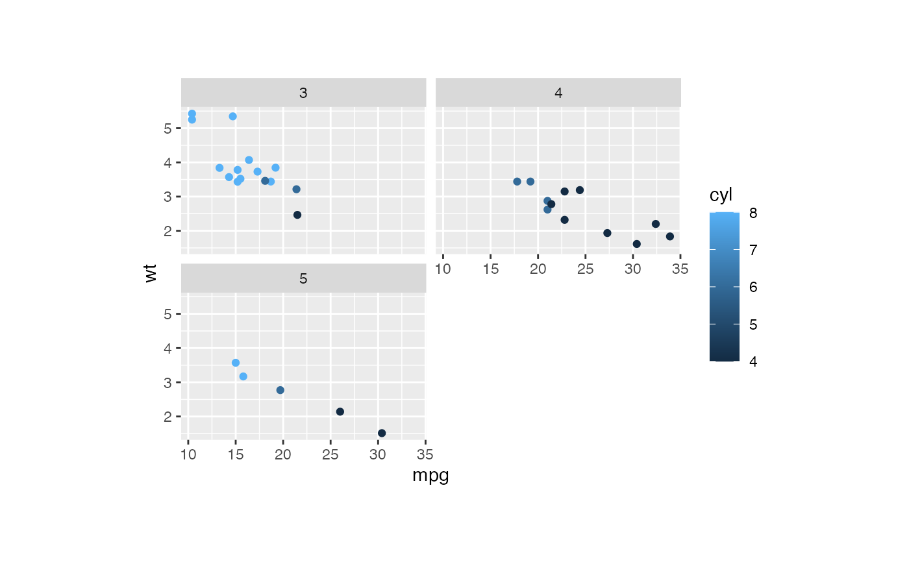
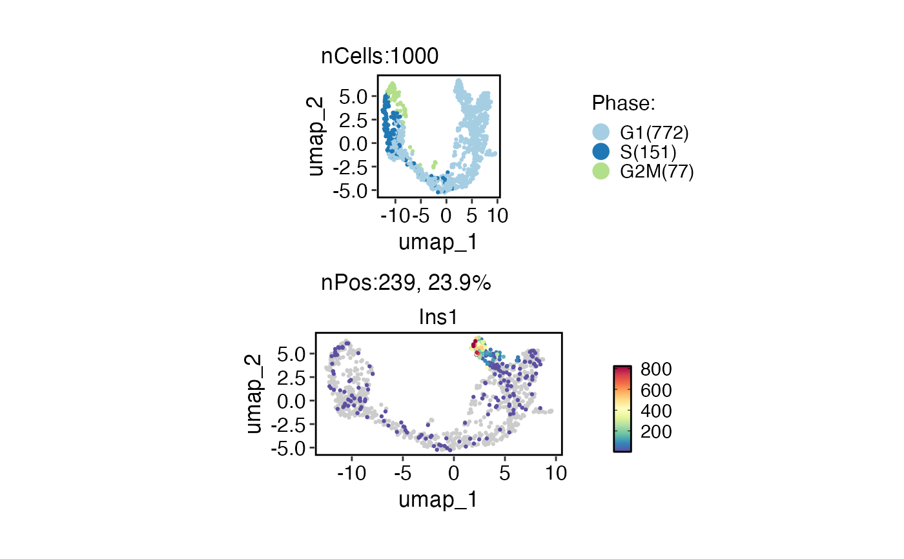
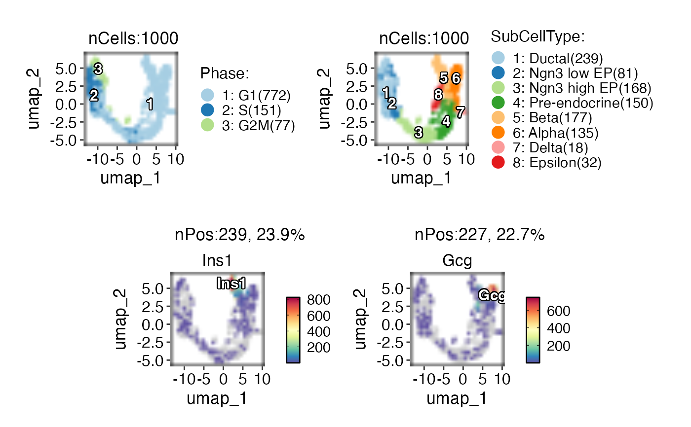
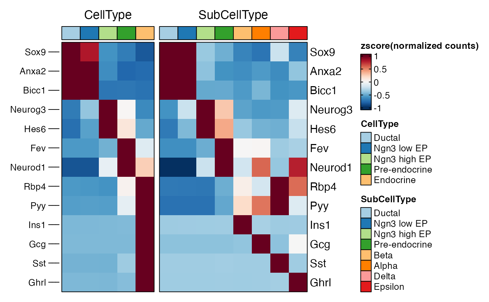
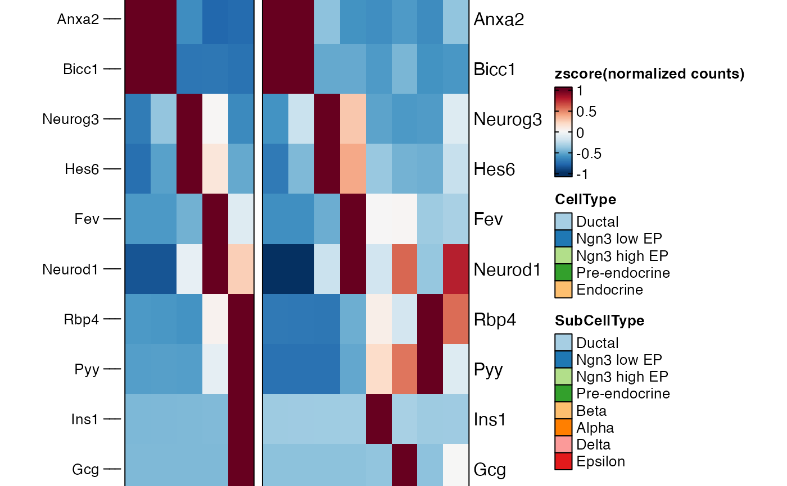
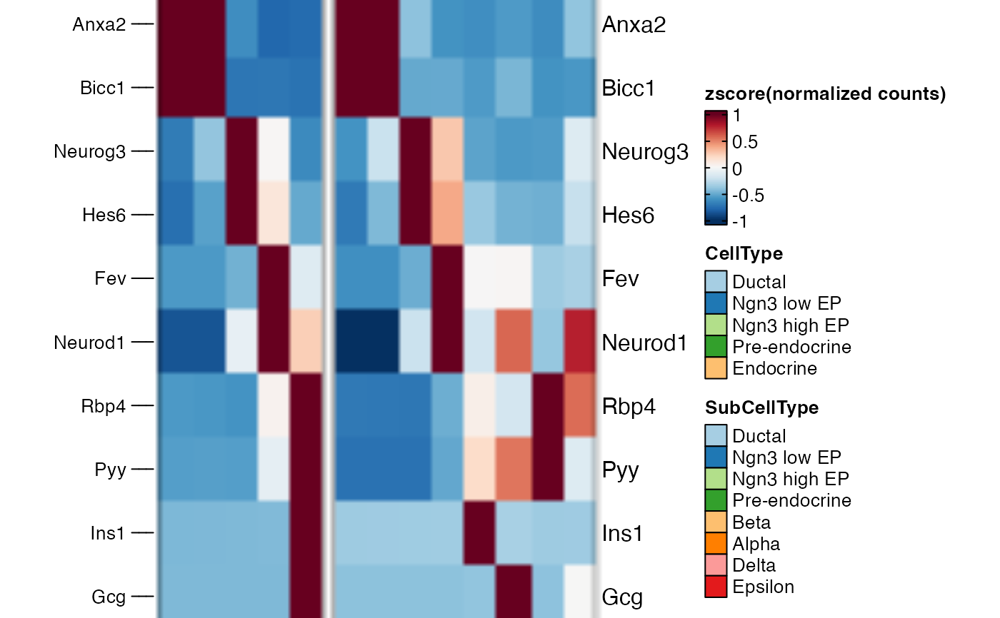
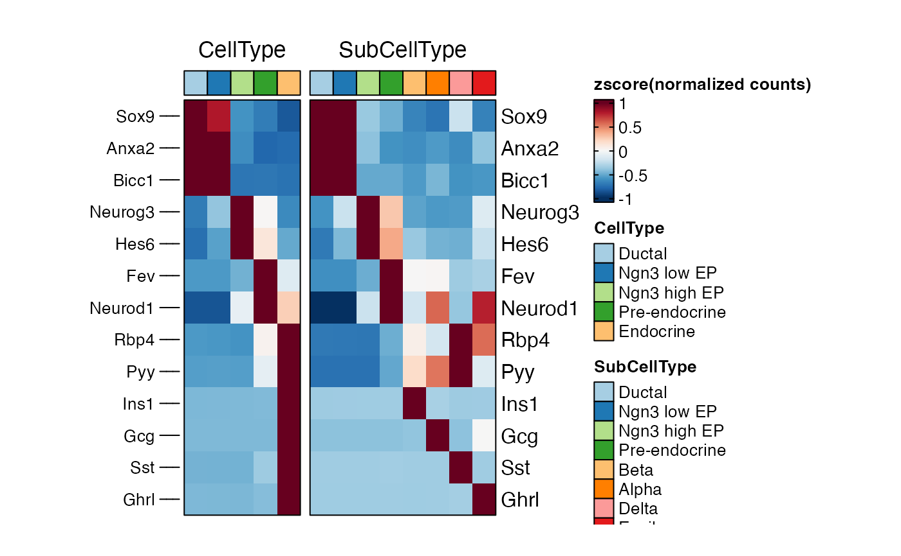
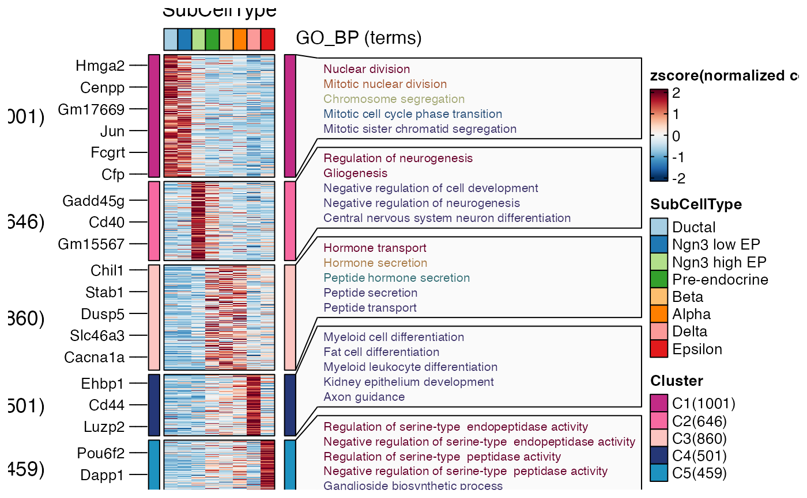
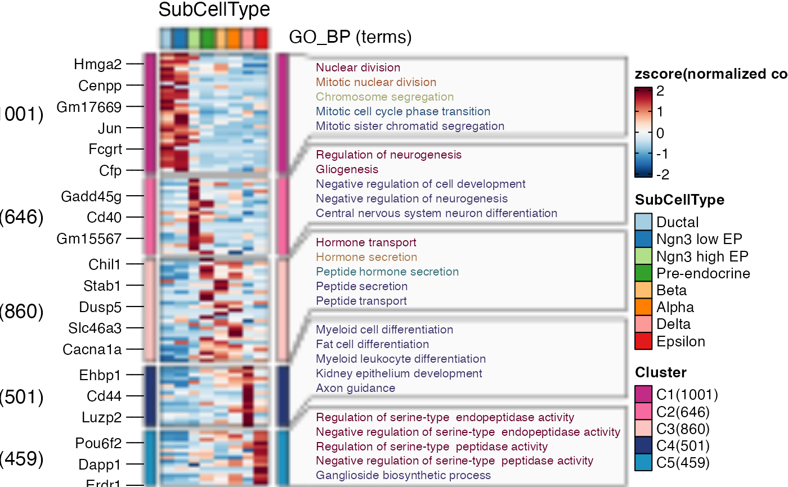
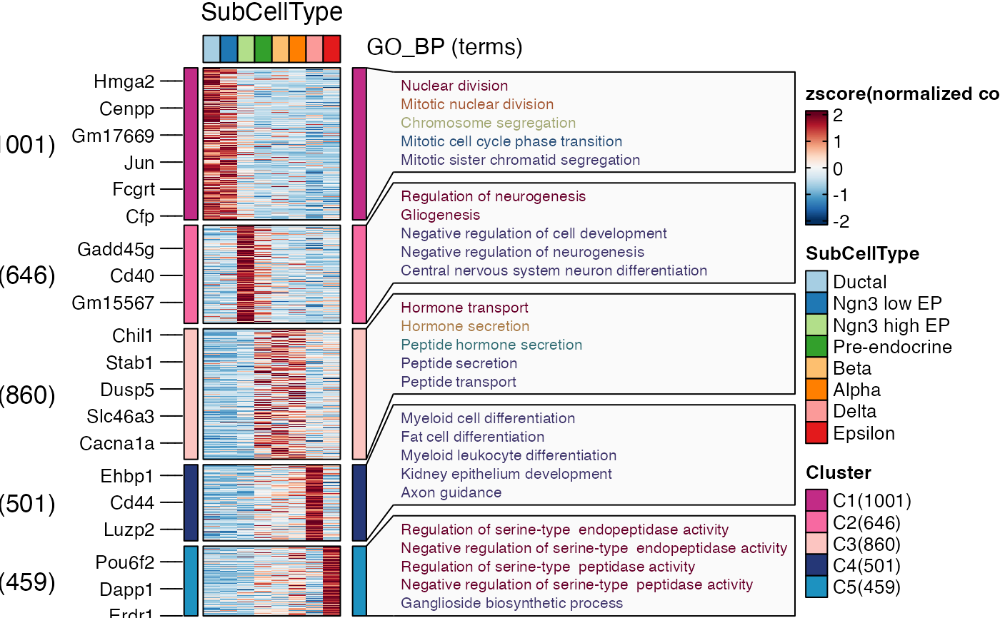

The ggplot object, when stored, can only specify the height and width of the entire plot, not the panel. The latter is obviously more important to control the final result of a plot. This function can set the panel width/height of plot to a fixed value and rasterize it.
panel_fix(
x = NULL,
panel_index = NULL,
respect = NULL,
width = NULL,
height = NULL,
margin = 1,
padding = 0,
units = "in",
raster = FALSE,
dpi = 300,
BPPARAM = BiocParallel::SerialParam(),
return_grob = FALSE,
bg_color = "white",
save = NULL,
verbose = FALSE,
...
)
panel_fix_overall(
x,
panel_index = NULL,
respect = NULL,
width = NULL,
height = NULL,
margin = 1,
units = "in",
raster = FALSE,
dpi = 300,
BPPARAM = BiocParallel::SerialParam(),
return_grob = FALSE,
bg_color = "white",
save = NULL,
verbose = TRUE
)Arguments
- x
A ggplot object, a grob object, or a combined plot made by patchwork or cowplot package.
- panel_index
Specify the panel to be fixed. If NULL, will fix all panels.
- respect
If a logical, this indicates whether row heights and column widths should respect each other.
- width
The desired width of the fixed panels.
- height
The desired height of the fixed panels.
- margin
The margin to add around each panel, in inches. The default is 1 inch.
- padding
The padding to add around each panel, in inches. The default is 0 inches.
- units
The units in which
height,widthandmarginare given. Can bemm,cm,in, etc. Seeunit.- raster
Whether to rasterize the panel.
- dpi
Plot resolution.
- BPPARAM
An
BiocParallelParaminstance determining the parallel back-end to be used during building the object made by patchwork package.- return_grob
If
TRUEthen return a grob object instead of a wrappedpatchworkobject.- bg_color
Plot background color.
- save
NULL or the file name used to save the plot.
- verbose
Whether to print messages.
- ...
Unused.
Examples
library(ggplot2)
p <- ggplot(data = mtcars, aes(x = mpg, y = wt, colour = cyl)) +
geom_point() +
facet_wrap(~gear, nrow = 2)
# fix the size of panel
panel_fix(p, width = 5, height = 3, units = "cm")

# rasterize the panel
panel_fix(p, width = 5, height = 3, units = "cm", raster = TRUE, dpi = 30)
# panel_fix will build and render the plot when the input is a ggplot object.
# so after panel_fix, the size of the object will be changed.
object.size(p)
#> 14928 bytes
object.size(panel_fix(p, width = 5, height = 3, units = "cm"))
#> 669136 bytes
## save the plot with appropriate size
# p_fix <- panel_fix(p, width = 5, height = 3, units = "cm")
# plot_size <- attr(p_fix, "size")
# ggsave(
# filename = "p_fix.png", plot = p_fix,
# units = plot_size$units, width = plot_size$width, height = plot_size$height
# )
## or save the plot directly
# p_fix <- panel_fix(p, width = 5, height = 3, units = "cm", save = "p_fix.png")
# fix the panel of the plot combined by patchwork
data("pancreas_sub")
p1 <- CellDimPlot(pancreas_sub, "Phase", aspect.ratio = 1) # ggplot object
p2 <- FeatureDimPlot(pancreas_sub, "Ins1", aspect.ratio = 0.5) # ggplot object
p <- p1 / p2 # plot is combined by patchwork
# fix the panel size for each plot, the width will be calculated automatically based on aspect.ratio
panel_fix(p, height = 1)
#> Warning: No shared levels found between `names(values)` of the manual scale and the data's fill values.

# fix the panel of the plot combined by plot_grid
if (requireNamespace("cowplot", quietly = TRUE)) {
p1 <- CellDimPlot(pancreas_sub, c("Phase", "SubCellType"), label = TRUE) # plot is combined by patchwork
p2 <- FeatureDimPlot(pancreas_sub, c("Ins1", "Gcg"), label = TRUE) # plot is combined by patchwork
p <- cowplot::plot_grid(p1, p2, nrow = 2) # plot is combined by plot_grid
# fix the size of panel for each plot
panel_fix(p, height = 1)
# rasterize the panel while keeping all labels and text in vector format
panel_fix(p, height = 1, raster = TRUE, dpi = 30)
}
#> Warning: No shared levels found between `names(values)` of the manual scale and the data's fill values.
#> Warning: No shared levels found between `names(values)` of the manual scale and the data's fill values.

# fix the panel of the heatmap
ht1 <- GroupHeatmap(pancreas_sub,
features = c(
"Sox9", "Anxa2", "Bicc1", # Ductal
"Neurog3", "Hes6", # EPs
"Fev", "Neurod1", # Pre-endocrine
"Rbp4", "Pyy", # Endocrine
"Ins1", "Gcg", "Sst", "Ghrl" # Beta, Alpha, Delta, Epsilon
),
group.by = c("CellType", "SubCellType"),
show_row_names = TRUE
)
# the size of the heatmap is not fixed and can be resized by zooming the viewport.
ht1$plot

# fix the size of the heatmap according the current viewport
panel_fix(ht1$plot)

# rasterize the heatmap body
panel_fix(ht1$plot, raster = TRUE, dpi = 30)

# fix the size of overall heatmap including annotation and legend
panel_fix(ht1$plot, height = 4, width = 6)

ht2 <- GroupHeatmap(pancreas_sub,
features = pancreas_sub[["RNA"]]@var.features,
group.by = "SubCellType",
n_split = 5, nlabel = 20,
db = "GO_BP", species = "Mus_musculus", anno_terms = TRUE,
height = 4, width = 1 # Heatmap body size for two groups
)
#> [2024-11-18 15:57:17.739807] Start Enrichment
#> Workers: 10
#> Species: Mus_musculus
#> Loading cached db: GO_BP version:3.18.0 nterm:15848 created:2024-11-18 14:32:38.567153
#> Permform enrichment...
#>
|
| | 0%
|
|====================== | 20%
|
|============================================ | 40%
|
|================================================================== | 60%
|
|======================================================================================== | 80%
|
|==============================================================================================================| 100%
#>
#> [2024-11-18 15:57:50.250988] Enrichment done
#> Elapsed time:32.51 secs
# the size of the heatmap is already fixed
ht2$plot

# when no height/width is specified, panel_fix does not change the size of the heatmap.
panel_fix(ht2$plot)
 # rasterize the heatmap body
panel_fix(ht2$plot, raster = TRUE, dpi = 30)
# rasterize the heatmap body
panel_fix(ht2$plot, raster = TRUE, dpi = 30)

# however, gene labels on the left and enrichment annotations on the right cannot be adjusted
panel_fix(ht2$plot, height = 5, width = 10)
